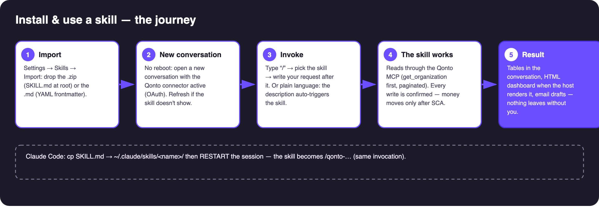
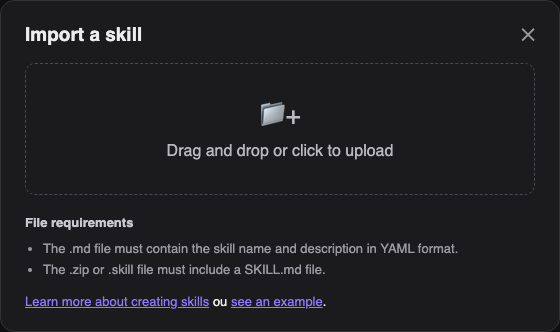

🗺 The journey

🎬 On video: the import in 22 seconds.
📋 Prerequisites
| Prerequisite | Detail |
|---|---|
| The skill file: .md OR .zip | The .md alone is enough when it carries name and description in YAML frontmatter (all skills in this repo do). A .zip must contain a SKILL.md at its root — ready-made zips live in each skill's skill/ folder. |
| Qonto connector connected | Settings → Connectors → Qonto → OAuth sign-in (your password is never shared). Without it the skill installs fine but has nothing to read. |
| Optional MCPs per skill | Gmail, Drive, Datagouv, Shopify… — detected dynamically; each skill degrades gracefully when absent. |
1️⃣ Import (claude.ai / Claude Desktop)
Settings → Skills → Import a skill, then drop the .zip (or the .md):

Claude reads the YAML frontmatter and registers the skill.
2️⃣ Use it: the “/” key
In a new conversation (no restart needed — refresh + new chat if the skill doesn't show), type /, pick the skill and write your request after it — or just write the sentence in plain language, the skill's description auto-triggers it:

3️⃣ Claude Code (CLI / VS Code)
- Copy the
SKILL.mdinto~/.claude/skills/<skill-name>/ - Restart the session (skills load at startup)
- Type
/qonto→ the skill shows in the autocomplete
✅ Check in 2 minutes
- “List my Qonto accounts” → the connector answers (if not: reconnect the connector, not the skill)
- Run the skill's example prompt (see its
PROCEDURE) - The skill announces what it does, paginates properly, and says plainly what it cannot do
⚠️ The 3 classic pitfalls
| Pitfall | Fix |
|---|---|
.md without YAML frontmatter → rejected | Use the repo files (all compliant) |
SKILL.md inside a zip subfolder → rejected | It must sit at the root (the provided zips are compliant) |
| Skill installed but Qonto connector missing | Connect the connector first — the skill runs on empty otherwise |